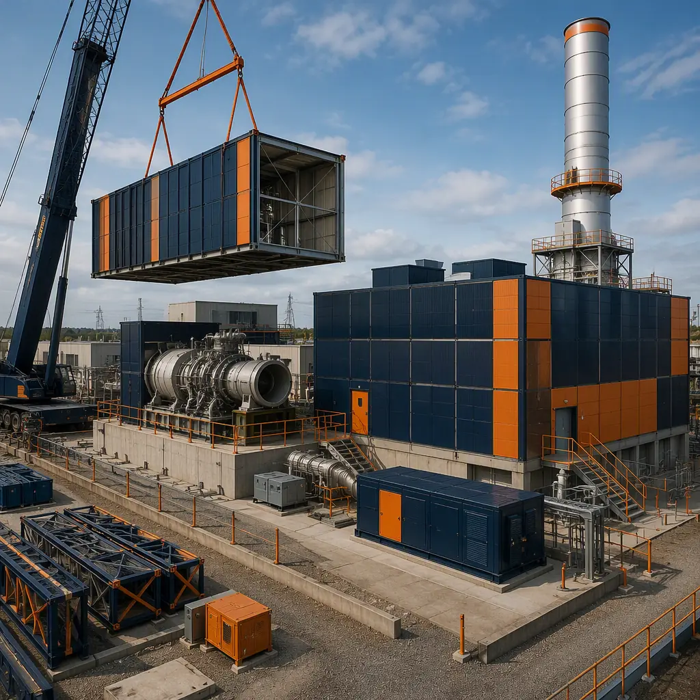
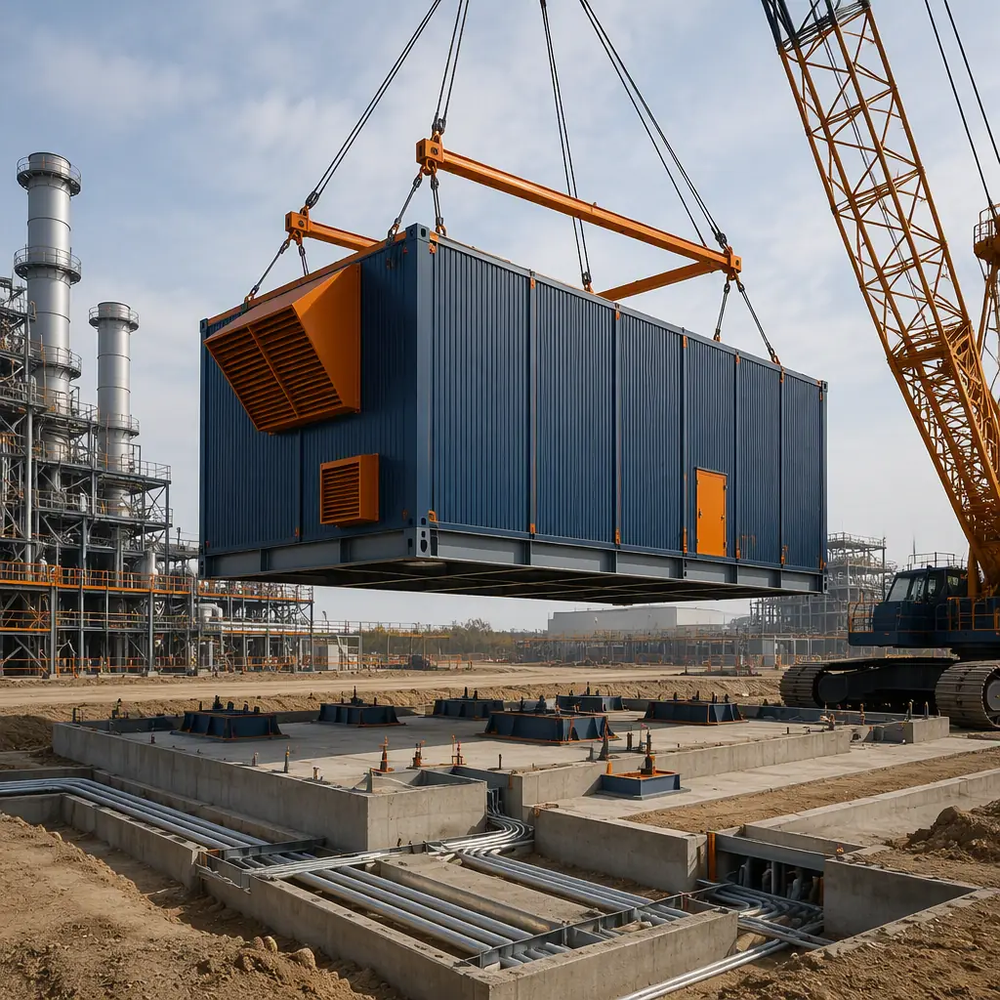
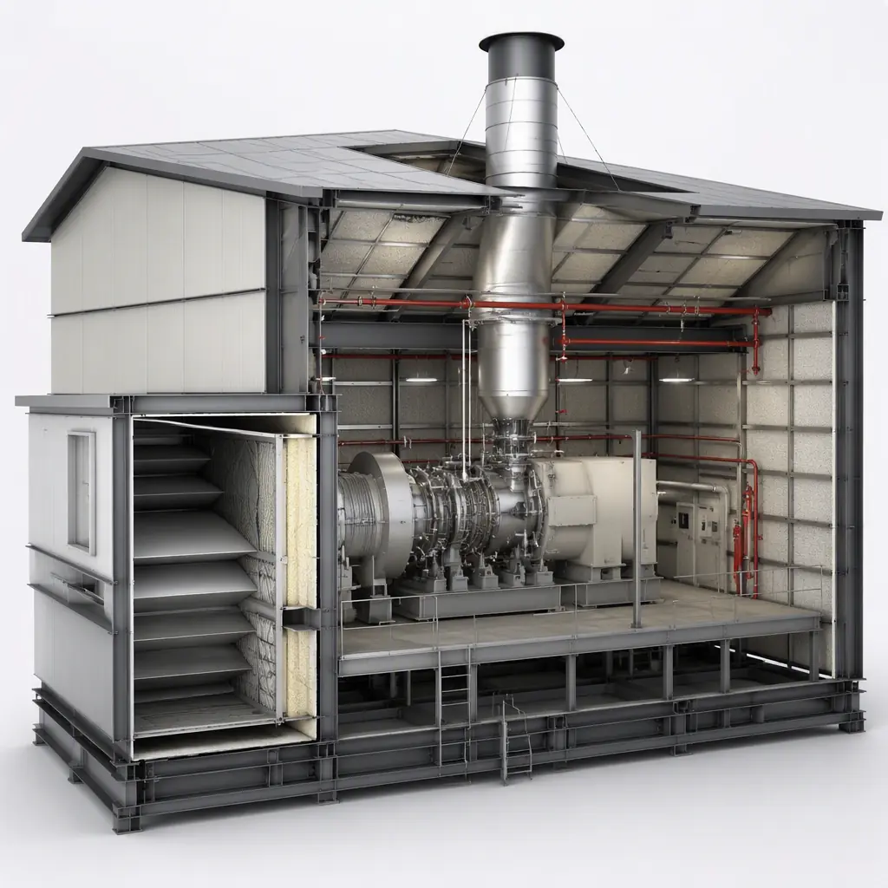
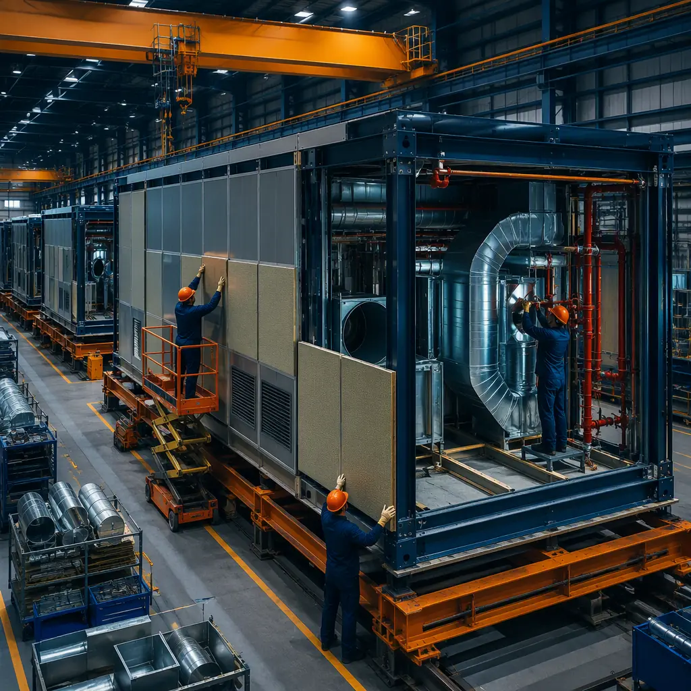

The US power sector is adding generating capacity faster than at any point in two decades — the US Energy Information Administration projects 26 GW of new natural gas capacity and 62 GW of solar capacity in 2025–2026 alone — but the buildings that house generation assets remain a bottleneck. A conventional gas turbine power plant takes 24–36 months from notice to proceed to commercial operation, and 30–40% of that schedule is consumed by site-built turbine enclosures, electrical buildings, control rooms, and balance-of-plant structures that could be factory-manufactured concurrently with turbine procurement and site civil works. For peaker plants, CHP systems, and distributed generation projects, the economics are even more sensitive to schedule: every month of delay postpones capacity payments, energy arbitrage revenue, and the reliability benefits the plant was contracted to deliver. Modular prefabricated construction addresses this by manufacturing the entire building package — gas turbine enclosures with acoustic treatment, electrical and switchgear buildings, control rooms, heat recovery enclosures, and administration structures — as factory-built modules while site preparation proceeds in parallel. The same factory-precision logic that delivers modular substation buildings and modular data center facilities applies directly to power generation infrastructure.

Why Power Plant Building Construction Is a Schedule Bottleneck
Power generation projects are governed by interconnection agreements, capacity contracts, and renewable portfolio standards that impose hard commercial operation dates — and the building construction scope is where those dates are most often missed:
- The building scope sits on the critical path between turbine delivery and grid connection. A gas turbine can be delivered and installed on its foundation in 8–12 weeks, but it cannot operate until its enclosure, inlet/exhaust systems, electrical building, and control room are complete. In conventional delivery, these structures are stick-built after turbine award — a 12–18 month building program that runs in series with turbine installation. Modular delivery manufactures the enclosures and electrical buildings in parallel with turbine fabrication, so the buildings arrive ready to set when the turbine does — compressing the overall schedule by 8–14 months. This concurrent-production model is the same one that accelerates heavy industrial facility construction across refining and petrochemical projects.
- Acoustic and thermal performance requirements demand precision fabrication. Gas turbine enclosures must achieve sound reductions of 25–35 dBA to meet OSHA and local noise ordinances at the property line, with acoustic panels, silencers, and intake filtration assemblies that must be fitted to tight tolerances. Factory fabrication controls panel fit, sealant application, and acoustic insulation density in a way field assembly cannot match — and allows full acoustic testing of the enclosure before shipment. Similarly, heat recovery steam generator (HRSG) enclosures and ductwork require precision fit-up that benefits from factory-controlled welding and alignment.
- Electrical and control buildings are the highest-coordination scope. A 100 MW peaker plant's electrical building houses medium-voltage switchgear, transformers, protection relays, and the plant control system — scope that requires thousands of terminations and extensive testing. Factory-built electrical buildings arrive fully terminated, labeled, and relay-tested, eliminating 10–16 weeks of field electrical work and the commissioning sequence that follows it. Factory QC systems for this scope are detailed in our analysis of modular factory quality control.
- Weather exposure delays outdoor construction. Conventional power plant buildings require concrete placement, steel erection, and enclosure work that are weather-sensitive; a Midwest or Northeast project loses 3–5 months to winter conditions. Factory production is indoor and year-round, with modules shipped to site for a compressed setting and connection sequence that can be scheduled in any season.


What Gets Factory-Built — The Power Plant Module Package
The modular power generation building package breaks into functional modules that can be manufactured and tested independently, then connected on site:
Gas Turbine and Reciprocating Engine Enclosures
Turbine enclosures are the most acoustically and thermally demanding buildings in the package. A typical enclosure for a 40–100 MW class turbine is 80–120 ft long with integrated inlet filtration house, exhaust silencer, and ventilation system sized for heat rejection of 2,000–4,000 BTU/s. Factory-built enclosures arrive with acoustic panels (typically 2–4 inch mineral wool cores with mass-loaded septa), fire detection and suppression (FM-200 or water mist per NFPA 850), gas detection, and lighting pre-installed. For reciprocating engine plants — increasingly common for peaking and grid support, with 10–60 MW installations using multiple medium-speed engines — the same factory approach delivers engine hall enclosures with ventilation sized for each engine's heat rejection and acoustic treatment meeting 85 dBA at 1 meter for OSHA compliance.
Electrical and Switchgear Buildings
The electrical building houses the plant's medium-voltage switchgear (typically 13.8 kV or 34.5 kV), station service transformers, protection and control panels, and the plant DCS/PLC system. Modular electrical buildings arrive factory-finished: switchgear installed on seismic-rated bases, cable trays pre-installed, terminations completed and torqued to specification, relay settings loaded, and point-to-point testing performed before shipment. This eliminates the field installation and testing sequence that consumes 10–16 weeks in conventional delivery and is a leading cause of commissioning delays. The same factory-integrated electrical approach is documented in our modular data center build-vs-buy analysis.
Control Rooms and Admin Buildings
Power plant control rooms require 24/7 HVAC redundancy, raised-access flooring, video wall structures, and fire suppression per NFPA 75. Factory-built control rooms arrive with consoles, cabling, and environmental systems pre-installed and tested. Administration buildings — offices, locker rooms, and maintenance shops — are manufactured to the same commercial standards as our modular office buildings, providing the site team with finished facilities from day one of operations.
CHP and Heat Recovery Enclosures
Combined heat and power plants add heat recovery scope — HRSG enclosures, hot water/steam distribution, and thermal storage — that benefits equally from factory fabrication. CHP is a fast-growing segment: the US Department of Energy reports over 4,400 CHP installations representing more than 80 GW of capacity, with industrial and district energy applications expanding. Modular CHP buildings are factory-fabricated with the heat recovery equipment, piping, and controls pre-installed, then set on site and connected to the thermal distribution network — compressing a 14–20 month build to 6–9 months. For facilities evaluating on-site generation alongside other energy infrastructure, see our guide to modular solar and BESS infrastructure.

Cost Structure — Modular vs. Conventional Power Plant Buildings
| Cost Category | Conventional (100 MW Peaker) | Modular (100 MW Peaker) |
|---|---|---|
| Turbine enclosure & inlet/exhaust systems | $4–6M (field-built) | $3.2–5M (factory-built, tested) |
| Electrical & switchgear building | $3–4.5M | $2.4–3.8M (pre-terminated) |
| Control room & admin buildings | $2–3M | $1.6–2.5M |
| Field labor, temp facilities & weather mitigation | $1.5–2.5M | $500–900K (setting crew only) |
| Module transport & setting | N/A | $700K–1.2M |
| Commissioning support (reduced) | $800K–1.2M (extended) | $400–700K (factory-tested) |
| Total Building Package | $11.3–17.2M | $8.8–14.1M |
Beyond the 20–25% building cost reduction, the dominant financial benefit is schedule: an 8–14 month earlier commercial operation date on a 100 MW peaker earning capacity payments of $5–12/kW-month plus energy margins can be worth $6–20M in incremental revenue — several times the building package savings. For a full treatment of modular economics, see our 2026 modular cost guide and our developer's ROI analysis.
Compliance — Codes Governing Power Plant Buildings
Power generation buildings are governed by a demanding compliance stack: NFPA 850 (recommended practice for electric generating plant fire protection), NFPA 70 (NEC) with special considerations for generator and switchgear spaces, NFPA 75 for control rooms, IBC seismic provisions with plant-specific importance factors, and local noise ordinances enforced at the property line. Factory-built modules can be fabricated and documented to these standards at the point of manufacture — with third-party inspection, acoustic test reports, and fire-rated assembly certifications issued before shipment — dramatically reducing field inspection delays. Fire safety design for prefabricated structures is covered in our guide to modular fire safety, and permitting strategy in our guide to permitting and zoning.
Is Modular Right for Your Power Project?
Modular power generation buildings deliver the strongest value for peaker plants and CHP systems with firm commercial operation dates, distributed generation portfolios (multiple sites with repeatable building packages), sites in weather-sensitive regions, and projects where the building scope sits on the critical path to grid connection. For large baseload plants where the building scope is small relative to turbine and BOP cost, conventional delivery may remain competitive — though enclosure and electrical building scope still benefits from factory fabrication. For utilities, IPPs, and industrials adding capacity, modular delivery converts the building program from a schedule risk into a parallel production stream — the same transformation documented across modular project risk reduction.